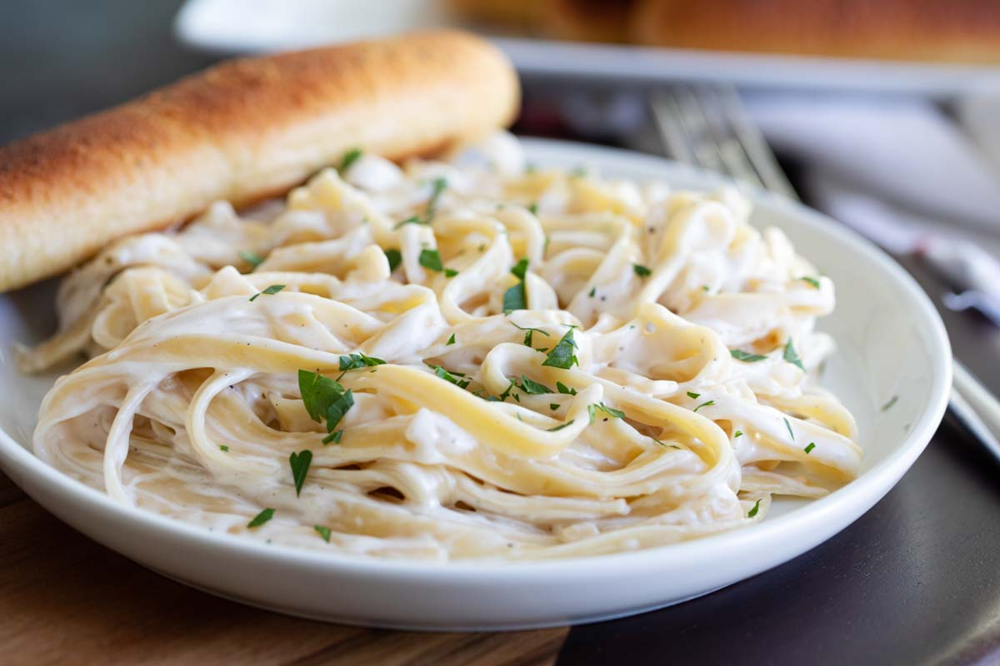

Alfredo Sauce

Description
It's been called mac-n-cheese for adults. And to us, that isn't a bad thing. So the next time you're in the
mood for a hearty Italian dish, try this recipe to have an ultra thick, decadently creamy, alfredo sauce.
I recommend making extra, because you're going to want leftovers.
Ingredients
- 1/2 cup butter
- 1 (8 ounce) package cream cheese
- 2 teaspoons garlic powder
- 2 cups milk
- 6 ounces grated Parmesan cheese
- 1/8 teaspoon ground black pepper
Steps
- Melt butter in a medium, non-stick saucepan over medium heat. Add
cream cheese and garlic powder, stirring with wire whisk until smooth.
Add milk, a little at a time, whisking to smooth out lumps. Stir in
Parmesan and pepper. Remove from heat when sauce reaches desired
consistency. Sauce will thicken rapidly, thin with milk if cooked too
long. Toss with hot pasta to serve.